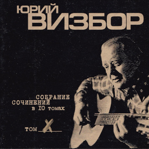

Спокойно, товарищ
Спокойно, товарищ, спокойно, У нас еще все впереди. Пусть шпилем ночной колокольни Беда ковыряет в груди. Не путай конец и кончину, Рассветы, как прежде, трубят, Кручина твоя не причина, А только ступень для тебя. По этим истертым ступеням, По горю, разлукам, слезам Идем, схоронив нетерпенье В промытых ветрами глазах. Виденья видали ночные У паперти северных гор, Качали мы звезды лесные На черных глазищах озер. Спокойно, дружище,спокойно, И пить нам и весело петь, Еще в предстоящие войны Тебе предстоит уцелеть. Уже и рассветы проснулись, Что к жизни тебя возвратят, Уже изготовлены пули, Что мимо тебя просвистят.
— 1962
Воспоминание о пехоте
Нас везут в медсанбат, Двух почти что калек, Выполнявших приказ не совсем осторожно, Я намерен еще протянуть пару лет, Если это, конечно, в природе возможно. Мой товарищ лежит, И клянет шепотком, Агрессивные страны, нейтральные тоже, Я ж на чутких врачей уповаю тайком, Если это, конечно, в природе возможно. Перед нами в снегах Лесотундра лежит, Медицинская лошадь бредет осторожно, Я надеюсь еще на счастливую жизнь, Если это, конечно, в природе возможно. Так и еду я к вам, В этих грустных санях, Что же вас попросить, чтоб вам было не сложно? Я хочу, чтобы вы не забыли меня, Если это, конечно, в природе возможно.
— 27 сентября 1980
Серега Санин
С моим Серегой мы шагаем по Петровке, По самой бровке, по самой бровке. Жуем мороженое мы без остановки - В тайге мороженого нам не подают. То взлет, то посадка, то снег, то дожди, Сырая палатка, и писем не жди. Идет молчаливо в распадок рассвет. Уходишь - счастливо! Приходишь - привет! Идет на взлет по полосе мой друг Серега, Мой друг Серега, Серега Санин. Сереге Санину легко под небесами, Другого парня в пекло не пошлют. Два дня искали мы в тайге капот и крылья, Два дня искали мы Серегу. А он чуть-чуть не долетел, совсем немного Не дотянул он до посадочных огней. То взлет, то посадка, то снег, то дожди, Сырая палатка, и писем не жди. Идет молчаливо в распадок рассвет. Уходишь - счастливо! Приходишь - привет!
— 1965
Сретенский двор
А в тени снег лежит, как гора, Будто снег тот к весне непричастен. Ходит дворник и мерзлый февраль Колет ломом на мелкие части. Во дворах-то не видно земли, Лужи - морем, асфальт - перешейком, И плывут в тех морях корабли С парусами в косую линейку. Здравствуй, здравствуй, мой Сретенский двор! Вспоминаю сквозь памяти дюны: Вот стоит, подпирая забор, На войну опоздавшая юность. Вот тельняшка - от стирки бела, Вот сапог - он гармонью, надраен. Вот такая в те годы была Униформа московских окраин. Много знали мы, дети войны, Дружно били врагов-спекулянтов, И неслись по дворам проходным По короткому крику: "атанда!". Кто мы были? Шпана не шпана, Безотцовщина с улиц горбатых, Где, как рыбы, всплывали со дна Серебристые аэростаты. Видел я суету и простор, Речь чужих побережий я слышал. Я вплываю в свой Сретенский двор, Словно в порт, из которого вышел. Но пусты мои трюмы, в пыли… Лишь надежды - и тех на копейку… Ах, вернуть бы мне те корабли С парусами в косую линейку!
— 1970
Командир подлодки
Вот что я видел: курит командир, Он командир большой подводной лодки, Он спичку зажигает у груди И прикрывает свет ее пилоткой. Подлодка, скинув море со спины, Вновь палубу подставила муссонам, С подветренной цепляясь стороны Антеннами за пояс Ориона. Глядит он в море, в море нет ни рыб, Нет синих ветров, дальних переходов, Нет водорослей, нет солнечной игры На рубках затонувших пароходов. Глядит он в море, в море есть вода, Скрывающая черные глубины, А под водой подводные суда, Чужие лодки, черные дельфины. Глядит на берег - нет цветов на нем, Нет девушек, нет хариуса в реках. Он видит там чужой ракетодром, Чужую власть, чужого человека. Мой командир немолод, но не сед. Он каждый день бывает в отделеньи, Где на сигарах атомных ракет Ребята спят, поют, едят варенье Антенны ожиданием полны, Приказ несет нелегкую заботу. Смыкаются две черные волны Над кораблем, дежурящим по флоту. И снова нет ни неба, ни земли, И снова ситуация такая: Дежурные по флоту корабли Россию по ночам оберегают.
— 1963
Море серое
А море серое всю ночь качается, И ничего вокруг не приключается. Не приключается… вода соленая, И на локаторе тоска зеленая. И тихо в кубрике гитара звякает. Ах, в наших плаваньях бывало всякое. Бывало всякое, порой хорошее, Но только в памяти травой заросшее. И молчаливые всю навигацию, Чужие девочки висят на рации. Висят на рации - одна в купальнике, А три под зонтиком стоят под пальмами. А море серое всю ночь качается, Вот и ушла любовь - не возвращается. Не возвращается. Погода портится, И никому печаль твоя не вспомнится.
— Август-сентябрь 1968
Ветер в соснах высоких качается
Ветер в соснах высоких качается, Серый дождик стучит по спине, Где-то в Арктике шторм начинается, Мокнут спины холодных камней. Часовой у обрыва прибрежного, Закрывает от брызг автомат, Молча смотрит на море мятежное, Вспоминая знакомых девчат. А в землянке сырой и нетопленой, Где в повалку солдаты лежат, Что-то пишет в тетрадке потрепанной Никогда не писавший сержант. Пишет он с перекурами частыми, Тень коптилки скользит за рукой, Говорят,что ночами ненастными И любимым без нас нелегко. Ветер в соснах высоких качается, Мелкий дождь по пилотке стучит, Это правда, что песня кончается, Но любовь никогда не молчит.
— Февраль 1958
Не грусти, сержант
Я смутно помню огни вокзала, В ночном тумане гудки дрожат, Ты улыбнулась и мне сказала: "Не надо слишком грустить, сержант". А поезд дальше на север мчится, Толкуют люди: - забудь о ней, А мне улыбка твоя приснится И две полоски твоих бровей. Наверно скоро устанет осень, Давно в Хибинах снега лежат И там, наверно, никто не спросит: "О чем ночами грустишь, сержант?"
— 28 ноября 1956
Капитан ВВС Донцов
А наземный пост с хрипотцой донес, Что у "тридцать второй" машины при взлете С левым шасси какой-то вопрос И оно бесполезно висит в полете. А человек, сидящий верхом на турбине, Капитан ВВС Донцов, Он памятник ныне, он память отныне И орден, в конце концов. Он памятник ныне, он память отныне И орден, в конце концов. И ночных полетов руководитель Стал кричать в синеву: "Войдите в вираж, в пике войдите, Но помнить: внизу живут!" А "Тридцать второй" кричит: на брюхо Сажусь и делу хана! А пенсию - официантке Валюхе, Она мне вроде жена. И красные строчки, посадочный знак, И красный удар в бетон. Прекрасные ветры в открытый колпак И кто-то целует потом. А человек, сидевший верхом на турбине - Капитан ВВС Донцов, Майор он отныне, инструктор отныне, Женат он, в конце концов.
— 1967
Рассказ ветерана
Мы это дело разом увидали, Как роты две поднялись из земли, И рукава по локоть закатали, И к нам с Виталий Палычем пошли. А солнце жарит, чтоб оно пропало, Но нет уже судьбы у нас другой, И я шепчу: "Постой, Виталий Палыч, Постой, подпустим ближе, дорогой". И тихо в мире, только временами Травиночка в прицеле задрожит, Кусочек леса редкого за нами, А дальше - поле, Родина лежит, И солнце жарит, чтоб оно пропало, Но нет уже судьбы у нас другой, И я шепчу: "Постой, Виталий Палыч, Постой, подпустим ближе, дорогой". Окопчик наш - последняя квартира, Другой не будет, видно, нам дано. И черные проклятые мундиры Подходят, как в замедленном кино. И солнце жарит, чтоб оно пропало, Но нет уже судьбы у нас другой, И я кричу: "Давай, Виталий Палыч! Давай на всю катушку, дорогой!" …Мои года, как поезда, проходят, Но прихожу туда хоть раз в году, Где пахота заботливо обходит Печальную фанерную звезду, Где солнце жарит, чтоб оно пропало, Где не было судьбы у нас другой. И я шепчу: "Прости, Виталий Палыч, Прости мне, что я выжил дорогой".
— 1972
Базука
В полуночном луче С базукой на плече Иду я посреди болот, А в городе перми, За сорок восемь миль, Меня моя красотка ждет. Ах, как у ней тепло, И тихо, и светло, И харча всякого полно, А нам до рубежа, Как говорит сержант, Еще метелиться всю ночь. В лунище вся земля И в синих журавлях, И в черных зеркалах озер, И в атомных судах, И в танковых следах, И в дырочках от лисьих нор. Я на святую Русь Базукой обопрусь, По планке выверю прицел. Бах!!! Вот это красота, Поджег один я танк, Ничуть не изменясь в лице. Но где-то, черт возьми, За десять тысяч миль, Другой солдат, в других местах, В полуночном луче, С базукой на плече, Шагает поджигать свой танк.
— 1963
Утренний рейс Москва - Ленинград
Горит лампада под иконой. Спешит философ на экзамен. Плывут по Охте полусонной Трамваи с желтыми глазами, Трамваи с желтыми глазами. И заняты обычным делом Четыре ветра над верстами По городам заледенелым, По белым ставням. Поземка бьет в стальные двери. Приказы свернуты петлею. Турбины "Ту" ревут, как звери, И мы прощаемся с землею И мы прощаемся с землею На целый час сплошного неба, На шестьдесят веков горячих, И под крылом земные недра открыты зрячим. Вот пехотинец роет снова Окопы маленькой лопатой, На черных просеках сосновых Лежат немецкие гранаты, Лежат немецкие гранаты, Лежат, разложены по нишам, Под голубой звездою Вегой, По черным ящикам прогнившим, под талым снегом. Лежат на сопках отдаленных Во тьме лихие командиры. Лежат работники районов В своих протопленных квартирах, В своих протопленных квартирах Лежит провинция глухая, Встают строительные роты, И долго песня затихает за поворотом. Лежат заботы на мужчинах, На их плечах тяжелым небом. Проснулся ножик перочинный, Очнувшись рядом с черствым хлебом, Очнувшись рядом с черствым хлебом Лежит поэт на красных нарах И над его стоят постелью Заиндевелые гитары поморских елей. Лежат торжественные думы, На облаках найдя спасенье. Вот набираем высоту мы По тыще метров за мгновенье, По тыще метров за мгновенье Летим, как Божее созданье, Неповторимое, слепое, На невозможное свиданье с самим собой.
— 1968
По краю воронок
По краю воронок - березок столбы. По краю воронок - грибы, да грибы. Автобус провоет за чахлым леском, Туман над Невою, как в сердце ком. А кто здесь с войны сыроежкой пророс? Так это ж пехота, никак не матрос. Матрос от снаряда имел поцелуй И вырос в отдельно стоящий валуй. По минному полю проходит взрывник, По бывшему минному полю - грибник, Он в каске, как дьявол, очки со слюдой, Бордовая "Ява", как конь молодой. Несут грибники на закуску грибы. Проносит санрота гробы, да гробы, Морская пехота, зенитная часть, Саперная рота и два трубача. А ну-ка, ребята, отдайте грибы, Пускай они снова вростают в гробы. Откинутся доски, земля отлетит И ротный построиться роте велит. И снова атака, и снова, "ура"! Опять из-за танков палит немчура. Нельзя и сторонкой уйти от судьбы… Воронки, воронки, грибы да грибы.
— 1967
Цена жизни
- Товарищ генерал, вот добровольцы, Двадцать два гвардейца и их командир. Построены по вашему… - Отставить, вольно, Значит, вы, ребята, пойдете впереди. Все сдали документы и сдали медали, К бою готовы, можно сказать. - Видали укрепления? - В бинокль видали. - Без моста, ребята, нам город не взять. Этот город называется Полоцк, Он войною на две части расколот, Он расколот на две части рекою, Полной тихого лесного покоя. Словно старец, он велик и спокоен, Со своих на мир глядит колоколен. К югу узкие поля убегают, Белорусская земля дорогая. - Задача такова - в город ворваться, Мост захватить и от взрыва спасти. Моста не отдавать, держаться, держаться До подхода наших танковых сил. А мы-то поспешим, мы выйдем на взгорье, Прикроем артиллерией смелый десант. Как ваша фамилия? - Лейтенант Григорьев. - Успехов вам, товарищ старший лейтенант. Беги вперед, беги, стальная пехота Двадцать два гвардейца и их командир. Драконовским огнем ревут огнеметы, Охрана в укрепленьях предмостных сидит. Да нет, она бежит в рассветном тумане, Грохочут по настилу ее сапоги. И мост теперь уж наш. Гвардейцы, вниманье! С двух сторон враги, с двух сторон враги. Четырнадцать атак лавой тугою Разбились об этот малый десант. Спасибо вам за все, товарищ Григорьев, Командир десанта, старший лейтенант. Вот город и река грохота полны, И мост под танками тихо дрожит. Товарищ генерал, приказ ваш исполнен, Да некому об этом вам доложить.
— 31 января 1973
Разрешите войти, господин генерал
Разрешите войти, господин генерал, Ваших верных солдат я всю ночь проверял, По уставу ли сложены их рюкзаки, Как побриты усы, как примкнуты штыки. Они очень годны для атаки ночной, Для удара в пустыне и в дождь проливной, На горящую крышу и в полуподвал, Они очень годны, господин генерал. Они могут из космоса бить по земле, Они могут из города сделать скелет, Но секретная служба доносит в досье, Господин генерал, они думают все. Они думают все о девчонках в цветах, Они думают все о весенних садах И о том, как бы вас уложить наповал… Разрешите идти, господин генерал?
— 1963
Десантники слушают музыку
Извиняюсь, но здесь не табор И не кони на водопой. Самоходки сошлись у штаба, Посреди метели слепой. А десантники слушают музыку, И у них за плечами у всех Сорок пять километров мужества, Перемноженного на снег. Старшине бы сказать:"Курсанты, Скоро утро и нам спешить, Парашюты после десанта, Надо тщательно просушить…" А десантники слушают музыку, И у них за плечами у всех Сорок пять километров мужества, Перемноженного на снег. Не из сказки и не из легенды С неба прыгнул курсантский взвод. Разрывает "Спидолу" Гендель, С автоматов капает лед. Так десантники слушают музыку И у них за спиною у всех Сорок пять километров мужества, Перемноженного на снег.
— 1963
Деревянный самолет
Зовет нас небо постоянно И защитить себя зовет. И вот летит - хоть деревянный, Но все-таки военный самолет. От пуль он защищен не слишком, Построен не на долгий век. Его пилот - совсем мальчишка, Но все-таки военный человек. Пусть летная трудна работа, Опасность подступает - пусть! Но жизнь - важнейший из полетов, И нужно верный выбрать путь. Лети, пилот, минуя смерти, Минуя черный дым стрельбы, Ведь пять печатей на конверте - Полетный курс твоей судьбы. И юность гордо пролетает Над черной пропастью войны, Но подвиг времени не знает, Пред ним все возрасты равны. И в опечатанном конверте Письмо в бессмертие несет Через огонь железной смерти Тот деревянный самолет.
— 6-8 января 1978
Военные фотографии
Доводилось нам сниматься И на снимках улыбаться Перед старым аппаратом Под названьем "Фотокор". Чтобы наши светотени Сквозь военные метели В дом родимый долетели Под родительский надзор. Так стояли мы с друзьями В перерывах меж боями. Сухопутьем и морями Шли, куда велел приказ. Встань, фотограф, в серединку И сними нас всех в обнимку: Может быть, на этом снимке Вместе мы в последний раз. Кто-нибудь потом вглядится В наши судьбы, в наши лица, В ту военную страницу, Что уходит за кормой… И остались годы эти В униброме, в бромпортрете, В фотографиях на память Для Отчизны дорогой.
— 1979